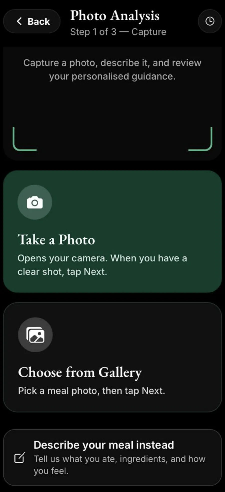
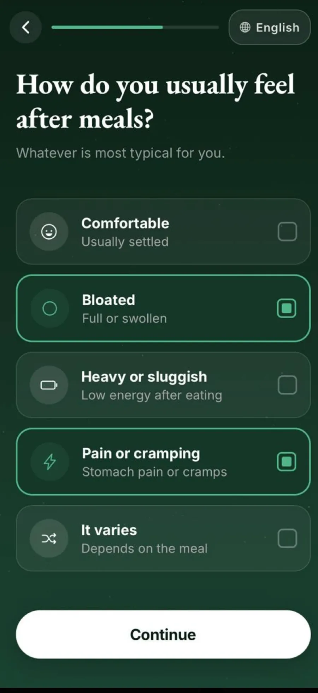
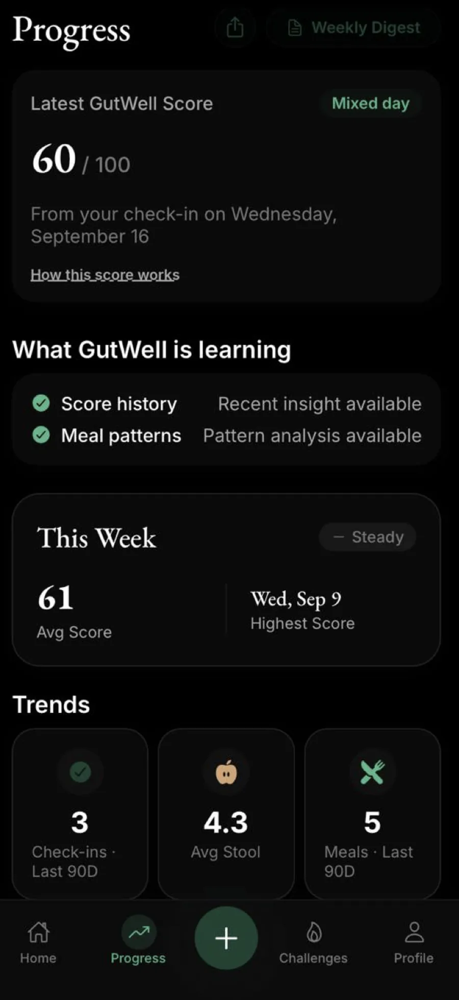

You don't need another list of foods to avoid.
You need a clearer picture of what works for you.
One check-in, one meal, one clearer picture.
Optional GutWell Premium subscription

You don't need another list of foods to avoid.
You need a clearer picture of what works for you.
How to get started
Five steps from download to your first reflection. Food and symptom tracking, in about a minute a day.
Download GutWell from the App Store.
Tell GutWell what you’d like to track and how you typically feel.
Add a short daily check-in and describe your meals.
See a personalized reflection based on the meal and context you shared.
Your history becomes more useful as you continue logging.
Optional GutWell Premium subscription
Inside the app


Two numbers, two questions
GutWell Score
44/ 100
Your day, summarised. A daily number built from your own check-ins — stool type, symptoms like bloating, energy and mood. It becomes more useful the more consistently you log.
Meal Impact Score
6/ 10
One meal, reflected back. GutWell AI's read on how a single meal may sit with you, given the symptoms, timing and context you shared.
It's a reflection tool, not a medical measurement.
Over time
A single check-in is a data point. A few weeks of them is a personal record of your digestion you can actually look back on.
Where AI stops
GutWell AI is a personal tracking and awareness tool. It does not provide medical diagnosis, treatment, or advice, and does not replace professional healthcare.
Every reflection is built from what you logged — your meals, your symptoms, the context you chose to share. When something looks wrong, Refine Analysis lets you correct it, and GutWell revises based on what you tell it. You are talking to your own health data.
The health information behind our guidance is published, with its sources named. If something about your gut health concerns you, that is a conversation for a healthcare professional — not an app.
The sources behind our health information are listed in the app under Sources & Methodology.
Questions
A personal gut-health tracker. You check in daily, describe your meals, and GutWell AI reflects your own logged data back to you — a score for the day, a read on individual meals, and possible patterns over time.
No. It is a tracking and awareness tool. It does not diagnose, treat, cure or prevent anything, and it does not replace professional healthcare.
A 0–100 summary of your day, calculated from your own check-ins — stool type, symptoms, energy and mood. It is a reflection tool, not a medical measurement.
A 1–10 read on a single meal, based on what you ate and the symptoms, timing and context you shared. Different question, different scale — it is not the same number as your GutWell Score.
No. Describing a meal in your own words, or by voice, works on every plan — on the free plan that is one analysis a day, for your first 14 days. Analysing a meal from a photo is part of GutWell Premium.
Logging meals and daily check-ins, your GutWell Score and its history, mood and stool trends, and exporting your data. Those have no daily limit and no time limit. AI meal analysis is counted separately: the free plan includes one text-based analysis a day — with its Meal Impact Score and reflection — for your first 14 days, and continues with Premium after that.
Meal analysis from a photo, expanded daily AI meal analysis, the full food-pattern review rather than just the strongest one, your personal Well-Tolerated Foods list, and a weekly digest.
As many as you like, on every plan. Logging a meal and analysing one are two different things: you can log every meal you eat, while an AI meal analysis — the Meal Impact Score and the written reflection — is the part that is counted.
No. It surfaces possible patterns between what you logged and how you felt, for you to review and reflect on. It cannot confirm an intolerance, and a suspected one is a conversation for a healthcare professional.
Your logs are yours. You can export everything as a CSV file, and you can permanently delete your account and its data from inside the app. Meal photos are not retained once an analysis has completed. Full detail is in the Privacy Policy.
Built for iPhone. Your data stays yours, and you can delete it — and your account — at any time.
Optional GutWell Premium subscription